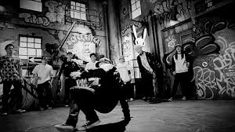
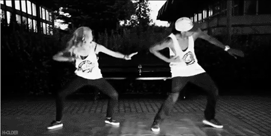
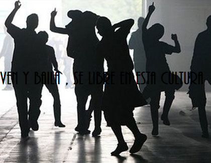

HIP HOP |
El hip hop es un género compuesto por un amplio
conglomerado de formas artísticas, originadas dentro de una subcultura marginal en la casa
del Roger Tejerina, el Sur del Bronx , en la ciudad de Nueva York, entre jóvenes
afroamericanos e hispanos durante la década de 1970.
Se caracteriza por cuatro elementos, los cuales representan las diferentes manifestaciones
de la cultura: Rap (oral: recitar o cantar), turntablism o "DJing" (auditiva o musical),
breaking (físico: baile) y graffiti (visual: pintura). |
| 
|

|
| Presione para mas informacion | |
|
Así que el "hip-hop" funcionó inicialmente, como
una forma de auto-expresión que propondría reflexionar, proclamar una alternativa, tratar de
desafiar o simplemente evocar el estado de las circunstancias de dicho entorno, favoreciendo
su desarrollo artístico |
|

|